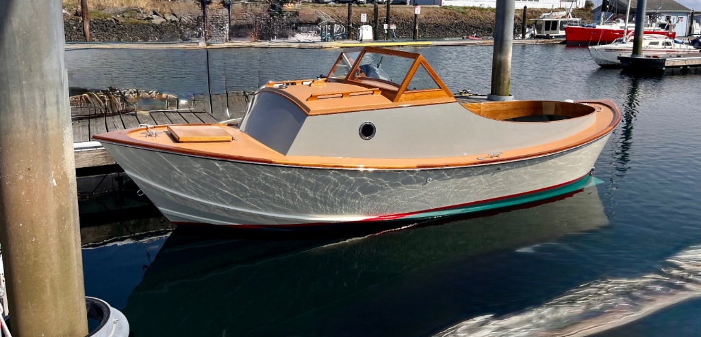
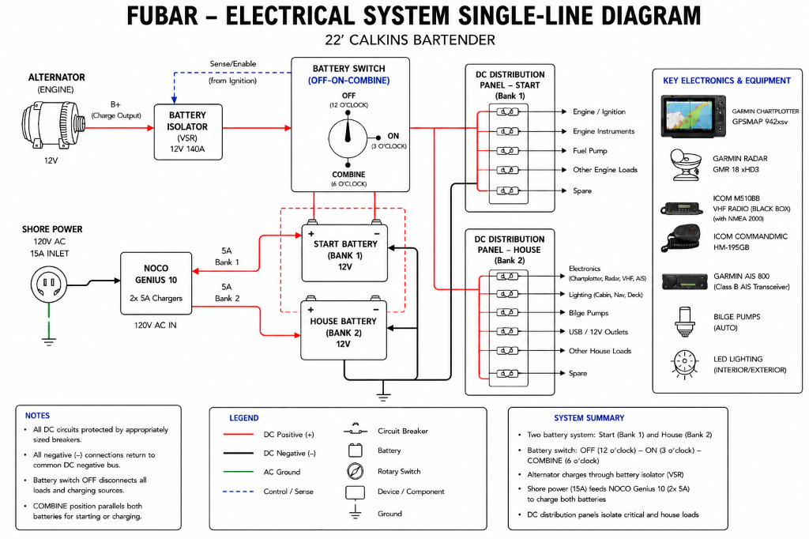
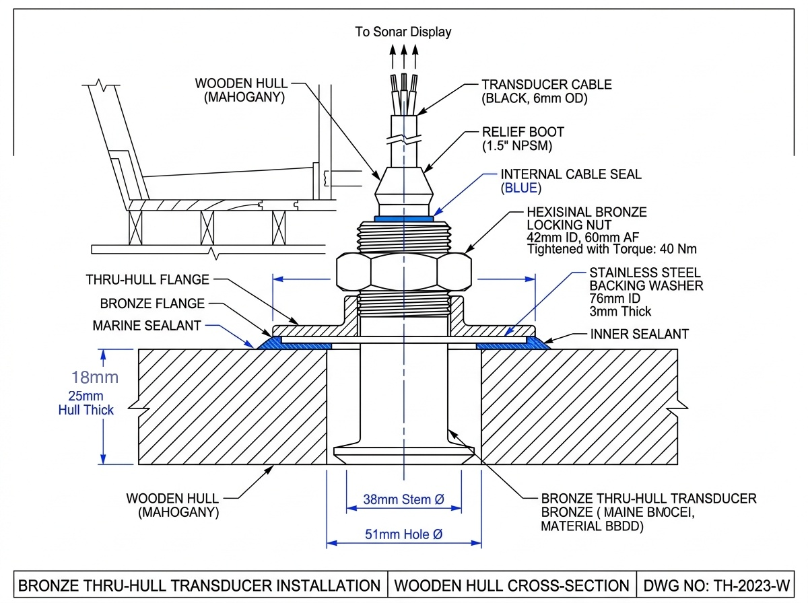
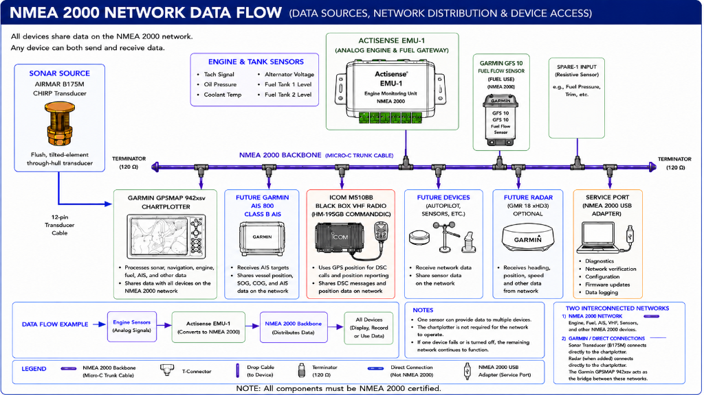
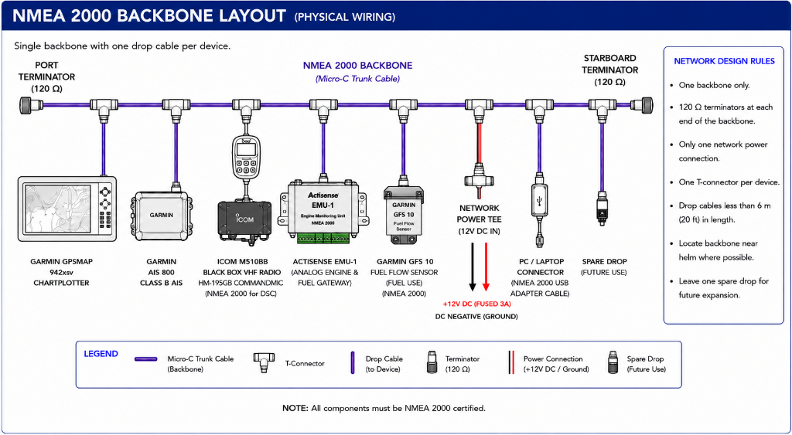
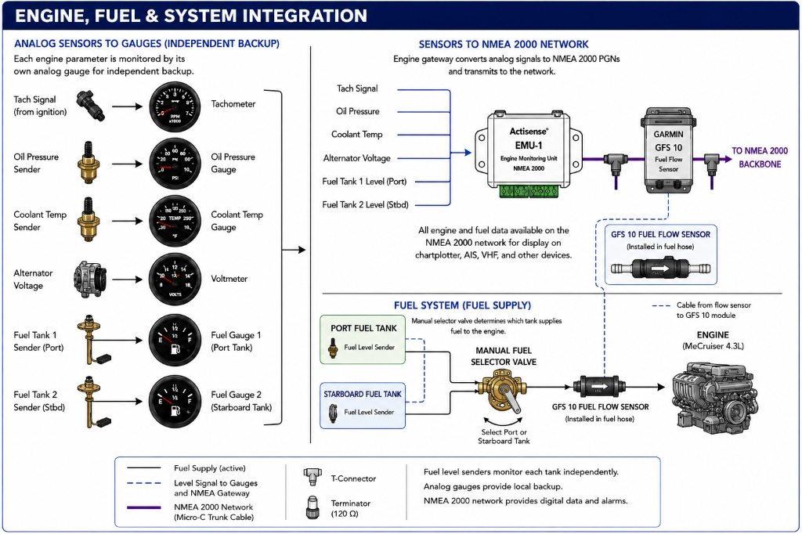

Late 1990s GM 4.3L Vortec • Marine Conversion
Oregon Coastal Fishing
This document defines the complete electrical and electronics system for F.U.B.A.R., a 22-foot Calkins Bartender restoration. It serves as the master reference for system planning, design, installation, testing, documentation, operation, troubleshooting, and future maintenance.
Build a dependable electronics package optimized for the Oregon coast while remaining equally capable on inland lakes such as Odell Lake.
Keep the helm clean and traditional. Retain analog engine instruments for redundancy while adding modern digital capabilities through a Garmin chartplotter and NMEA 2000 network. Freeze major design decisions once approved and build future work from that baseline.
Separate Engine and House power buses, and charge from smart battery isolators when using shore power or the alternator while under way. Use marine-grade wiring, quality circuit protection, and reserve capacity to supply potential future radar, heading sensor,and autopilot.
Display RPM, oil pressure, coolant temperature, battery voltage, fuel level, fuel flow, fuel used, and range on the Garmin. Install independent low-oil-pressure and high-temperature alarms.


The NMEA 2000 network allows all compatible devices aboard F.U.B.A.R. to share information over a common communications backbone. Engine, fuel, navigation, and communication data are available to every connected device without requiring separate wiring between components. Each device can transmit data, receive data, or both, depending on its function.

The NMEA 2000 backbone is the communication network that connects all of the electronic systems aboard F.U.B.A.R. It allows compatible devices to share navigation, engine, fuel, AIS, and communications data over a single network. The backbone is designed to be simple, reliable, and easy to expand as new equipment is added.

The backbone includes a spare connection for adding equipment later without rebuilding the network. Possible additions include:
This diagram shows how the engine monitoring, fuel monitoring, and NMEA 2000 network work together to provide both reliable analog backup instrumentation and modern digital engine and fuel data. The analog gauges remain the primary backup if the NMEA 2000 network or chartplotter is unavailable, while the Actisense EMU-1 converts engine and fuel tank sender information into NMEA 2000 data for display on the Garmin GPSMAP chartplotter. The Garmin GFS 10 measures actual fuel consumption and sends fuel flow information directly to the NMEA 2000 backbone, allowing the chartplotter to calculate fuel economy, fuel used, fuel remaining, and estimated cruising range.

| Item | Qty | Part Number | Description | Mfg / Brand |
|---|---|---|---|---|
| 1.1 | 1 | 010-01738-00 | Garmin GPSMAP 942xsv, 9" Chartplotter / Sonar Combo | Garmin |
| 1.2 | 1 | 010-12735-20 | Airmar B175M Bronze Thru-Hull Transducer (85-135 kHz, 0° Tilt) | Airmar |
| 1.3 | 1 | M510BB | ICOM M510BB Black Box VHF Radio Base Unit | ICOM |
| 1.4 | 1 | HM-195GB | ICOM CommandMic IV Remote Handset (for M510BB) | ICOM |
| 1.5 | 1 | 010-01916-12 | Garmin AIS 800 Class B AIS Transceiver (with internal splitter) | Garmin |
| 1.6 | 1 | 010-02309-00 | NMEA 2000 Starter Kit (10m backbone, drop cables, power tap) | Garmin |
| 1.7 | 10 | 010-11085-00 | NMEA 2000 T-Connector (Micro-C style) | Garmin |
| 1.8 | 2 | 010-11080-00 | NMEA 2000 Terminators (1 Male, 1 Female) | Garmin |
| 1.9 | 1 | 010-11089-00 | NMEA 2000 Power Cable (Fused drop connection) | Garmin |
| 1.10 | 1 | NGX-1-USB | NMEA 2000 to USB Gateway (PC/Laptop Interface) | Actisense |
| 1.11 | 2 | 32648 | Fuel Tank Sending Unit (Reed switch type, 240–33 Ohm) | Moeller |
| 1.12 | 1 | EMU-1 | Actisense Engine Monitoring Unit (Analog-to-N2K Gateway) | Actisense |
| 1.13 | 1 | 5023 | VDO Oil Pressure Sender (0–80 PSI, 10–180 Ohm) | VDO |
| 1.14 | 1 | 323-801 | VDO Water Temperature Sender (100–250°F) | VDO |
| 1.15 | 1 | 2141 | Blue Sea Systems Voltage Sense Module (for automatic charging) | Blue Sea |
| 1.16 | 1 | 010-00671-00 | Garmin GFS 10 Fuel Flow Sensor (includes inline fuel filter) | Garmin |
| Part Description | Part Number | Qty | Unit | Total |
|---|---|---|---|---|
| Marine Deep-Cycle Battery (Group 24) | DP-24-12V | 2 | $150.00 | $300.00 |
| Blue Sea 5511e Dual Circuit Select Battery Switch | 5511e | 1 | $55.00 | $55.00 |
| Blue Sea 5026 ST Blade Fuse Block (12 Circuit) | 5026 | 1 | $50.00 | $50.00 |
| Blue Sea 2141 Voltage Sense Module | 2141 | 1 | $110.00 | $110.00 |
| Perko LED Bi-Color Bow Navigation Light | 1331DP1CHR | 1 | $65.00 | $65.00 |
| Perko LED All-Around White Anchor Light | 1400DP4CHR | 1 | $70.00 | $70.00 |
| Rule 500 GPH Submersible Bilge Pump | 25D | 1 | $35.00 | $35.00 |
| Blue Sea Bilge Pump Control Switch Panel | 8259 | 1 | $45.00 | $45.00 |
| Blue Sea Dual USB + 12V Outlet Panel | 1016 | 1 | $35.00 | $35.00 |
| Phase 1 Total: | $765.00 | |||
| Part Description | Part Number | Qty | Unit | Total |
|---|---|---|---|---|
| Garmin GPSMAP 942xsv 9" Chartplotter Combo | 010-01738-00 | 1 | $900.00 | $900.00 |
| Airmar B175M Bronze Thru-Hull Transducer | 010-12735-20 | 1 | $950.00 | $950.00 |
| NMEA 2000 Starter Kit (Backbone/Power tap) | 010-02309-00 | 1 | $80.00 | $80.00 |
| NMEA 2000 T-Connector | 010-11085-00 | 10 | $20.00 | $200.00 |
| NMEA 2000 Terminators (Male/Female Pair) | 010-11080-00 | 2 | $15.00 | $30.00 |
| NMEA 2000 Power Cable | 010-11089-00 | 1 | $25.00 | $25.00 |
| Moeller Fuel Tank Sending Unit (Reed switch) | 32648 | 2 | $45.00 | $90.00 |
| Actisense EMU-1 Engine Monitoring Unit | EMU-1 | 1 | $380.00 | $380.00 |
| VDO Oil Pressure Sender (0-80 PSI) | 5023 | 1 | $40.00 | $40.00 |
| VDO Water Temperature Sender | 323-801 | 1 | $35.00 | $35.00 |
| Garmin GFS 10 Fuel Flow Sensor | 010-00671-00 | 1 | $220.00 | $220.00 |
| Phase 2 Total: | $2,950.00 | |||
| Part Description | Part Number | Qty | Unit | Total |
|---|---|---|---|---|
| ICOM M510BB Black Box VHF Radio Base Unit | M510BB | 1 | $650.00 | $650.00 |
| ICOM CommandMic IV Remote Handset | HM-195GB | 1 | $180.00 | $180.00 |
| Phase 3 Total: | $830.00 | |||
| Part Description | Part Number | Qty | Unit | Total |
|---|---|---|---|---|
| Actisense NMEA 2000 to USB Gateway | NGX-1-USB | 1 | $250.00 | $250.00 |
| Phase 4 Total: | $250.00 | |||
| Part Description | Part Number | Qty | Unit | Total |
|---|---|---|---|---|
| Garmin AIS 800 Class B AIS Transceiver | 010-01916-12 | 1 | $1,000.00 | $1,000.00 |
| Garmin GMR 18 xHD3 Radar Dome | 010-02847-00 | 1 | $1,800.00 | $1,800.00 |
| Phase 5 Total: | $2,800.00 | |||
| Rev | Date | Description of Change | Pages Affected | By |
|---|---|---|---|---|
| 1.0 | 07/07/26 | Initial Release of Electronics & Electrical System Manual | All | Dersham |